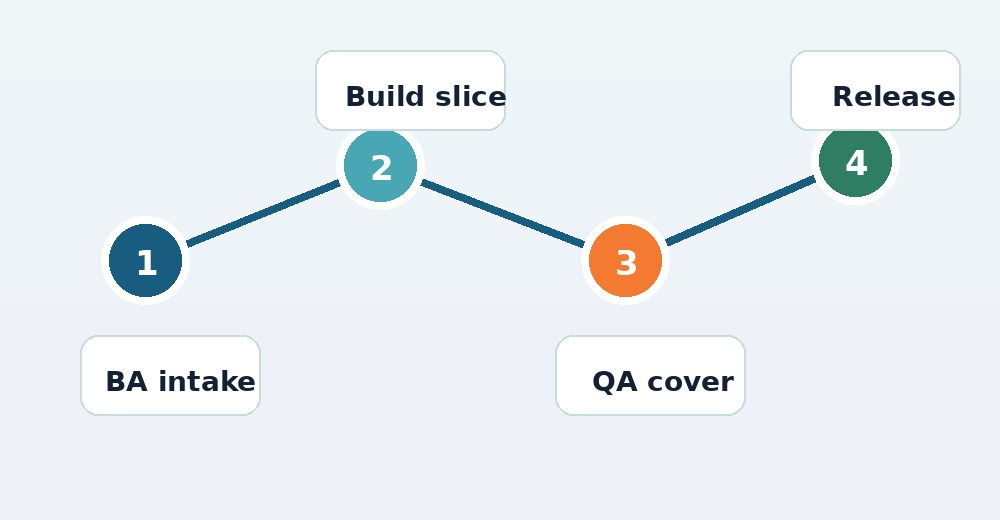

Securities processing for a global fintech
Dashboard work shipped on time with client product teams.
View case studyVestmark supports portfolio management, trading, advisor tools, tax-aware investing, and model workflows. New roadmap work needs safe releases across that platform without slowing core teams.
Saw the Business Analyst hiring signal. That usually means new enterprise requirements are coming, and delivery capacity must be ready.
The BA signal says Vestmark is shaping more roadmap work for VestmarkONE. Pulse and the AI leadership hire add more product pressure. The hard part is the handoff from requirements to secure build, test, and release. If that handoff slows down, enterprise requests wait and internal teams carry more load.
Six-week pilot; continue only after proved value.

Pair with your BA team to turn VestmarkONE workflows into clear specs, edge cases, and release slices.
Ship one focused feature stream across Java, .NET, or React, with weekly demos for product owners.
Create automated checks around portfolio, trading, and advisor flows before new AI work reaches clients.
Document decisions, tests, and backlog risks so Vestmark can keep velocity when hiring catches up.
Elinext is a full-cycle software development company, active since 1997, with about 700 in-house specialists and no freelancers. We build web, mobile, backend, QA, AI/ML, and DevOps teams for enterprise clients. For Vestmark, the fit is finance-grade delivery, ISO 27001 security, ISO 9001 quality, and senior teams that work under your Product Owner. Our customer list includes Broadcom, Siemens, Volkswagen, TRUMPF, and TUI. That matches the bridge squad above: trusted people, clear scope, and steady release support.
Dashboard work shipped on time with client product teams.
View case studyAutomated and manual QA reduced risk for banking workflows.
View case study